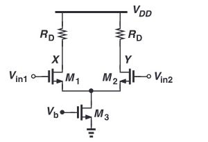

P1. MOS 차동쌍의 공통 모드 이득
주어진 조건
- $M_1$, $M_2$: $\lambda = 0$
- $M_3$: $\lambda \neq 0$
- $(V_{GS} - V_{TH})_{eq.}$: $M_1$, $M_2$의 평형(equilibrium) 오버드라이브
- $I_{SS}$는 그림에 라벨이 없음. $M_3$가 흘리는 테일 전류로 보임
구할 것
- 공통 모드 이득을 계산하고 다음을 증명 $$A_{CM} = \frac{-R_D I_{SS}}{\dfrac{2}{\lambda} + (V_{GS} - V_{TH})_{eq.}} \qquad (10.224)$$

원문 보기
Compute the common-mode gain of the MOS differential pair shown in Fig. 10.88. Assume $\lambda = 0$ for $M_1$ and $M_2$ but $\lambda \neq 0$ for $M_3$. Prove
$$A_{CM} = \frac{-R_D I_{SS}}{\dfrac{2}{\lambda} + (V_{GS} - V_{TH})_{eq.}}, \qquad (10.224)$$
where $(V_{GS} - V_{TH})_{eq.}$ denotes the equilibrium overdrive of $M_1$ and $M_2$.
문제를 읽어요
두 입력을 똑같이 조금 올렸을 때 한쪽 출력 X가 얼마나 움직이는지 구해요. 대칭이므로 Y도 똑같이 움직여요. 여기서 $A_{CM}=v_X/v_{CM}=v_Y/v_{CM}$은 단일종단 공통 모드 이득이에요. 두 출력을 뺀 전달비와 구별해요.
$I_{SS}$는 평형에서 $M_3$가 흘리는 테일 전류로 정의해요. $M_1$, $M_2$에는 각각 $I_{SS}/2$가 흘러요. 저주파·작은 신호·포화 영역의 교과서 MOS 모델을 쓰며 몸체 효과는 무시해요.
이 개념과 공식을 떠올려요
“두 입력이 같은 변화”와 대칭 회로라는 단서에서 공통 모드 반회로(CM half circuit)를 골라요. 한 가지 전류가 $i_d$만큼 늘면 테일에는 $2i_d$가 흘러요. 같은 소스 전압을 한 가지 전류만으로 재현하려면 반회로의 소스 아래에 $2r_{O3}$가 필요해요.
$g_m$은 입력 MOS 한 개의 트랜스컨덕턴스이고, $V_{ov}=(V_{GS}-V_{TH})_{eq.}$는 평형 오버드라이브예요. $r_{O3}$는 테일 전압 변화가 테일 전류를 바꾸는 정도를 나타내요. $M_3$는 게이트와 소스가 AC 접지이므로 $v_{gs3}=0$, 따라서 제어 전류원은 0이고 $r_{O3}$만 남아요.
이 식의 $\lambda$는 $M_3$의 값이에요. $M_1$, $M_2$는 $\lambda=0$이므로 두 입력 소자의 $r_o$를 생략해요. 몸체 효과도 생략한 이 모델에서는 드레인과 소스의 증분 전류가 같아 소스 축퇴(source degeneration) 관계를 바로 세울 수 있어요.
종이에 쓸 첫 줄
먼저 $v_P=r_{O3}(i_d+i_d)=2r_{O3}i_d$라고 적어요. 저항을 반으로 나누는 것이 아니라, $2r_{O3}$ 두 개의 병렬이 원래 $r_{O3}$가 되도록 나누는 거예요. 다음은 X 쪽 반회로예요.
아래 방향 $i_d$는 제어 전류원이 X에서 P로 보내는 전류예요. P에서 접지로 나가는 전류는 $v_P/(2r_{O3})$이고, 게이트에는 전류가 흐르지 않아요. X에서는 $R_D$를 통해 접지로 나가는 전류와 $i_d$를 더해 KCL을 썼어요.
이렇게 풀어요
소스 전압이 입력을 따라 올라가므로 실제 제어 전압은 $v_{CM}-v_P$로 줄어요. P의 KCL을 제어 전류식에 넣어요.
마지막 부호는 X의 KCL에서 $v_X=-R_Di_d$이기 때문이에요. 이제 원문에 있는 평형 오버드라이브로 $g_m$을 바꿔요. 장채널 제곱 법칙의 $g_m=2I_D/V_{ov}$에서 한 입력 MOS의 전류는 테일 전류의 절반이에요.
분자와 분모에 $I_{SS}$를 곱해 분모의 전류를 없앴어요. $V_{ov}$를 원문의 $(V_{GS}-V_{TH})_{eq.}$로 되돌리면 요구한 식이에요. 이 문항은 원문이 특정 식의 증명을 요구하므로 그 증명식을 보존해요. 수업의 기본 근사 $2g_mr_{O3}\gg1$에서는 $A_{CM}\approx-R_D/(2r_{O3})$로 정리해요.
완성 답과 검산
한쪽 출력의 공통 모드 이득은 다음과 같아요. 대칭·포화·저주파 소신호, 입력 MOS의 $\lambda=0$, 몸체 효과 생략 모델이에요.
- 단위: $R_DI_{SS}$는 $\Omega\cdot\mathrm A=\mathrm V$이고 $2/\lambda$와 $V_{ov}$도 V이므로 이득은 V/V예요.
- 부호: $v_{CM}>0$이면 $i_d>0$, 따라서 $v_X=-R_Di_d<0$이에요.
- 이상적 테일: $\lambda\to0^+$이면 $r_{O3}\to\infty$라 $A_{CM}\to0$이에요.
- 축퇴가 없어지는 수학적 극한: $r_{O3}\to0$이면 $A_{CM}\to-g_mR_D$로 보통 CS 단 이득이 돼요.
- 대칭: $v_X=v_Y$이므로 $(v_X-v_Y)/v_{CM}=0$이에요. 각 출력의 CM 이득이 유한해도 차동 출력의 CM 전달은 0이에요.
주의할 점
- 공통 모드에서 P를 가상 접지로 두면 테일의 억제 작용이 사라져요. 가상 접지는 대칭 차동 자극에서 쓰는 판단이에요.
- 반회로에는 $r_{O3}/2$가 아니라 $2r_{O3}$를 써요. 한 가지 전류가 절반이 되어도 P의 전압은 원 회로와 같아야 해요.
- $g_m$에 넣는 전류는 $I_{SS}/2$예요. $M_3$의 $r_{O3}$에는 전체 테일 전류 $I_{SS}$를 써요.
- 입력쌍의 $\lambda=0$을 테일에도 적용하면 이 문항에서 증명할 유한 CM 이득을 잃어요. 한쪽 출력 이득과 차동 출력 CM 전달비도 구분해요.
조건을 바꾸어 생각해요
- 다른 바이어스와 소자는 그대로 두고 $R_D$만 두 배로 하면? 같은 포화 영역을 유지한다면 $g_m$과 $r_{O3}$가 같으므로 $A_{CM}$은 두 배가 돼요. 단, DC 드레인 전압이 낮아져 포화를 잃지 않는지 확인해야 해요.
- 한쪽 출력 대신 X−Y를 읽으면? 완전 대칭에서는 0이에요. 두 반회로가 같은 $i_d$와 같은 출력 전압 변화를 만들기 때문에 뺄셈에서 사라져요.
- 테일 $\lambda$만 더 작게 만들고 평형 $I_{SS}$·입력쌍 $V_{ov}$를 유지하면? $2/\lambda$가 커져 $|A_{CM}|$이 작아져요. 무조건 정확히 $\lambda$에 비례하는 것은 아니며, 그 비례는 $2/\lambda\gg V_{ov}$일 때예요.
떠올릴 개념
대칭 CM 반회로는 소스 아래 $2r_{O3}$를 가진 축퇴 CS 단이에요. $M_3$의 $v_{gs3}=0$이라 테일에는 $r_{O3}=1/(\lambda I_{SS})$만 남아요.
첫 식과 판단
소스 상승이 제어 전압을 줄여요. X의 KCL은 $v_X=-R_Di_d$예요.
결과와 조건
$V_{ov}=(V_{GS}-V_{TH})_{eq.}$예요. 입력 $\lambda=0$·몸체 효과 생략·포화 소신호 모델이며 원문이 요구한 증명식은 보존해요. 수업의 기본 큰 테일 저항 근사에서는 $A_{CM}\approx-R_D/(2r_{O3})$예요.
혼동 구분·검산
한쪽 출력 CM 이득은 음수이고 무차원이에요. $\lambda\to0$이면 0이에요. 완전 대칭에서 X−Y의 CM 전달은 항상 0이에요.